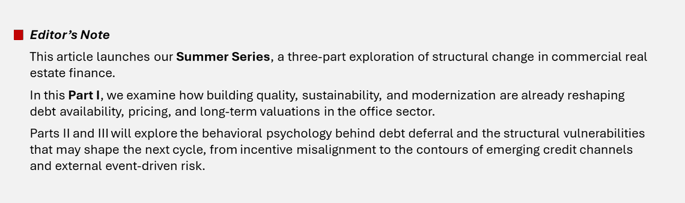
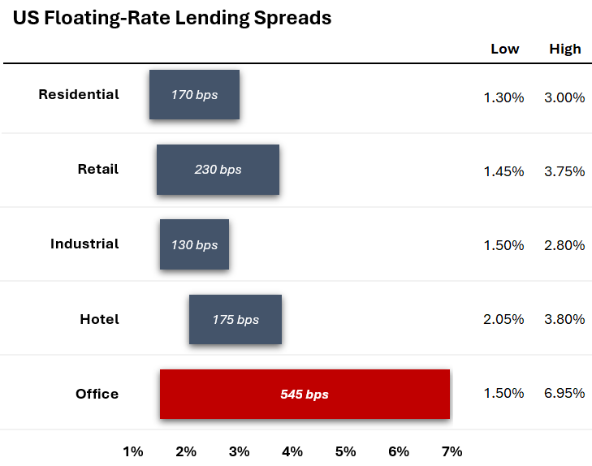
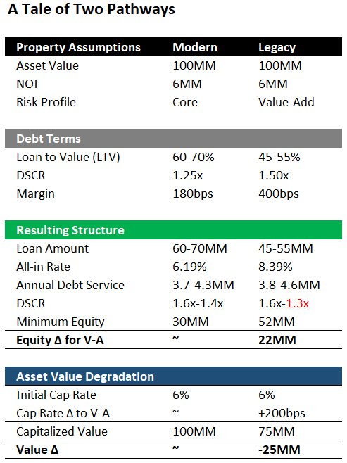
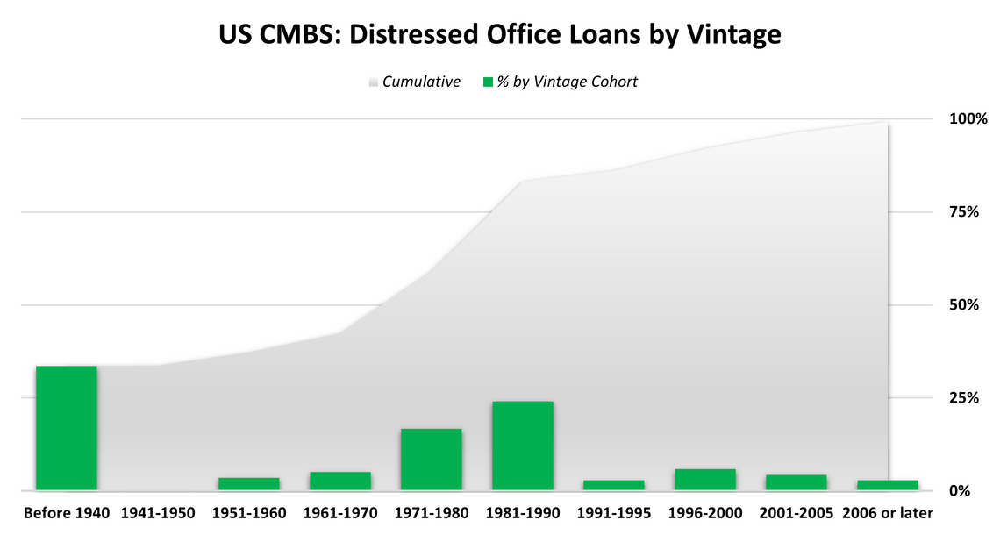
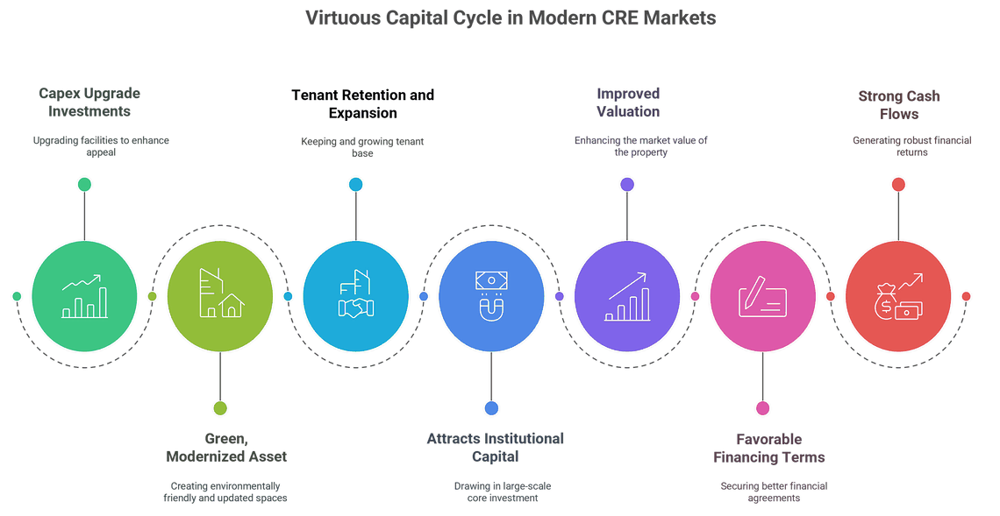

Summer Series Part I: Lending Signals and the Repricing of Office Values

A Structural Repricing of Office Risk Has Begun
By mid-2025, the divergence in global office finance has crystallized into structural repricing. Trophy assets that are green, modern, and well located are commanding capital on terms approaching those of investment-grade corporate debt.
By contrast, legacy buildings that often date from the mid-20th century and lack both operational efficiency and sustainability credentials, are facing increasingly prohibitive debt conditions or outright capital exclusion.
This phenomenon is not simply a byproduct of the current interest rate cycle. While capital markets remain responsive to macroeconomic pressures, the financing environment for office assets reflects a deeper shift. The risk premium assigned to building quality, environmental compliance, and modernization is no longer marginal but now is central to credit allocation. In effect, lenders are repricing the physical underpinnings of commercial real estate, introducing a new capital market regime where vintage and green credentials are weighted as heavily as tenancy and lease maturity.
A Tale of Two Markets: Same Sector, Differing Realities
Recent data on Commercial Mortgage-Backed Securities (CMBS) originations in the US illustrates the growing divide. In Q1 2025, US office CMBS issuance was $10.1B, already surpassing the full-year 2024 figure of $8.6B. Nearly all of that Q1 issuance was allocated to a narrow cohort of premium, amenitized, and modernized buildings in urban cores [1].

The spread range for office finance is now the widest in commercial real estate. According to Chatham Financial, offices are borrowing at floating-rate spreads of 150 to 695 basis points over SOFR, representing by far the largest lending rate range of any asset class [2]. This range is driven by both quality and location, with trophy assets at the lowest-end and aging suburban assets on the high-end. Lenders are pricing a gap between best-in-class and legacy office assets that is more than double that of any other asset class.
In absolute terms, two buildings with similar footprints and rent rolls may now face borrowing costs that diverge by millions annually, purely as a function of asset quality, as lenders strike a cautionary tone on brown asset risks and future capex required.
Debt Access in Practice: Identical Buildings, Differing Capital Stacks
To quantify the impact of asset quality, consider a hypothetical example. Two office buildings, each valued at $100 million with identical NOI of $6 million, face very different financing outcomes based solely on modernization and sustainability credentials.

For the modern, ESG-compliant asset, lenders are typically comfortable offering leverage of 65-70% LTV, with DSCR near 1.25x. With an assumed total interest cost of 6%, this borrower is responsible for around $4.2 million in annual debt service and an equity contribution of $30-35 million.
By contrast, the legacy asset will likely be limited to 45-50% LTV, with a stricter DSCR threshold of 1.50x or higher. Spreads would price wider, driving all-in borrowing costs to around 8.5%. Annual debt service could exceed $4.5 million, which would need to be lowered with higher equity to avoid a DSCR covenant breach. The resulting equity requirement for this borrower would be around $52 million. In this case the price of simply owning an aging asset is an additional $22 million in equity (a 70% increase), to be weighed against expected value declines on a relative basis compared to core yields.
Same income, same location, yet vastly different capital accessibility.
In Europe, Regulation Deepens the Divide
European markets show similar dynamics, with sustainability regulation acting as a further accelerator of capital bifurcation. Office-backed CMBS loans have underperformed other sectors, with 6 of the 10 worst-performing European loans since 2023 linked to offices [3]. However, the underperformance is not sector-wide and appears driven by building quality.
Scope Ratings highlights loans on City Point (London office tower, built / reno in 1967 / 2011, 54.9% LTV) and The Squaire (Frankfurt mixed-use complex, build 2011, 68.8% LTV) as carrying "very high" refinancing risk due to age, environmental inefficiency, and tenant attrition [3].
Conversely, the loan secured by the Aldgate Tower office asset in London, was rated "very low" risk despite a 70% LTV. The difference lies in a capital injection by the sponsor, as well as a major tenant expansion that significantly improved the lease profile. Aldgate is a modernized development with strong green credentials and BREEAM certification, making it far more attractive to lenders under new energy efficiency frameworks.
Vintage as a Proxy for Credit Risk
Building age is emerging as a strong predictor of financing constraints and default likelihood. In a recent Trepp analysis, the total universe of US CMBS office loans with occupancy below 60% represented over $9B in total outstanding balance across 279 loans. Of these, the two most sizable cohorts were seen in $3.0B tied to pre-1940 vintage properties and $3.7B to buildings constructed between 1971 and 1990 [1].

In fact, assets built before 1991 collectively represent over 83% of all distressed CMBS office loans in the US. While every property asset represents a complex set of physical and economic factors, there is a clear relationship between aging obsolescence and credit deterioration.
The reason is not merely aesthetic. Older buildings tend to lack energy efficiency, tenant flexibility, digital infrastructure, and modern amenities. These features are now minimum requirements for a best-in-class designation across office markets globally, and lenders increasingly view older assets as stranded by design, not just by tenant turnover.
Green as a Financing Determinant
Energy efficiency and building modernization are no longer secondary credit inputs. Across both US and European markets, these credentials have become essential risk screens that directly affect pricing, advance rates, and refinance eligibility.
In Europe, regulatory mandates under the Energy Performance of Buildings Directive (EPBD) and country-level standards are rendering older buildings economically obsolete. Lenders are now attaching significant spread premiums (or avoiding these assets entirely) given the cost and complexity of retrofitting inefficient buildings under evolving regulatory standards [4]. This creates a stark and binary outcome: upgrade or fall behind.
As a result, forward-thinking managers are proactively retrofitting a wide range of office assets to improve energy efficiency - benefiting from enhanced liquidity on completion, as lenders see the assets as future-proof and less vulnerable to tenant churn or regulatory depreciation.
The Capital Flywheel: How Quality Compounds Advantage
Modern, green office buildings benefit from a self-reinforcing loop of capital access, tenant resilience, and asset valuation, which then enables further future investment to keep pace.

Once a building establishes itself as green and operationally modern, it attracts institutional capital seeking compliant collateral. That capital arrives with tighter spreads and greater leverage, allowing the owner to reinvest in tenant experience and operational upgrades. As tenant retention and expansion improve, so too do NOI profiles and refinancing options. The cycle continues, compounding advantage over time.
Strategic Implications for Investors
This financing bifurcation has meaningful implications for institutional real estate strategy. For trophy office asset owners, the environment is constructive. Access to competitively priced debt enables further reinvestment and supports resilient valuations. Some trophy assets are borrowing at tighter spreads than many BBB-rated corporate issuers.
For owners of legacy office stock, however, the outlook is more sobering. As refinancing windows close and capex burdens rise, distressed sales or write-downs may become necessary. While 2023 was defined by the lender strategy of “extend and pretend” and 2024 saw the emergence of “stay alive until 25”, lenders are now increasingly reluctant to extend loans secured by assets built before the 20th century unless substantial equity contributions and retrofit plans are in place.
That said, opportunities remain. Selective acquisition of undercapitalized buildings with favourable locations and upgrade potential could offer attractive basis entry points, especially for investors with patient capital and development capabilities. The key is distinguishing between functional obsolescence that can be reversed and structural flaws that cannot.
- Trepp Research. “The Office Reset: Now May Be the Time to Buy”. Jun 2025 ↩
- Chatham Financial. “Lending Market Overview: Global Real Estate Markets". Q1 2025 ↩
- Scope Ratings. “European CRE/CMBS Outlook: Cautious Optimism”. Jan 2025 ↩
- Knight Frank. "Meeting the Commercial Property Retrofit Challenge – Part 1: Defining a Strategy". Sep 2024 ↩